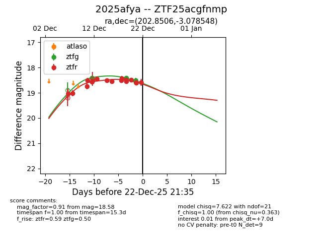
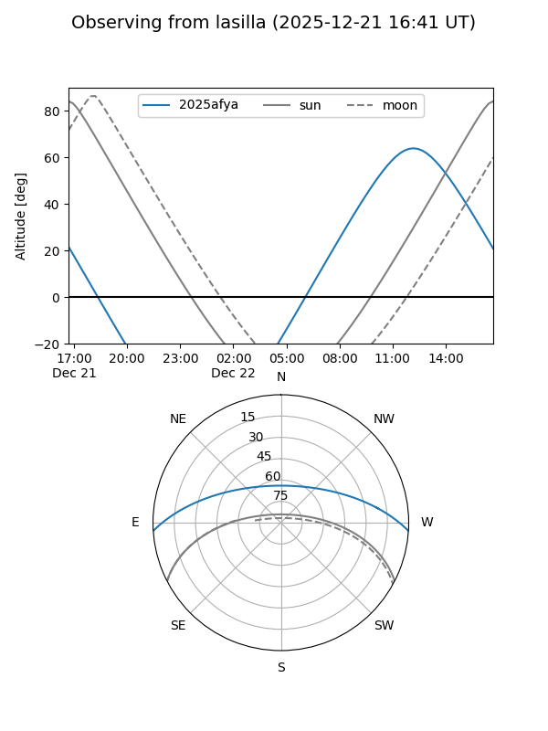
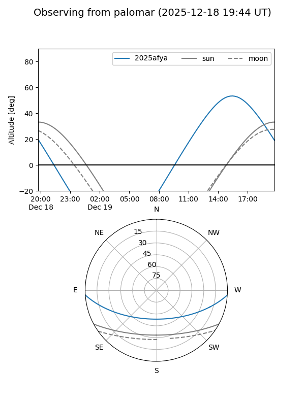
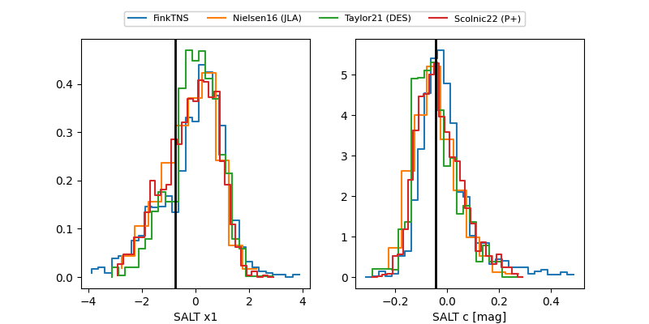

2025afya
Target 2025afya at 2025-12-21 14:22
Aliases and brokers:
FINK: fink-portal.org/ZTF25acgfnmp
Lasair: lasair-ztf.lsst.ac.uk/objects/ZTF25acgfnmp
ALeRCE: alerce.online/object/ZTF25acgfnmp
TNS: wis-tns.org/object/2025afya
YSE: ziggy.ucolick.org/yse/transient_detail/2025afya
alt names
ZTF25acgfnmp (ztf,fink_ztf)
2025afya (tns,yse)
Coordinates:
equatorial (ra, dec) = 202.8506,-3.07855
equatorial (HMS+DMS) = 13:31:24.14,-03:04:42.77
galactic (l, b) = (322.1776,+58.29199)
Flags:
Photometry:
last ztfg=18.50, ztfr=18.59
5 ztfg, 16 ztfr detections
Lightcurve

Visibility


Additional plots
